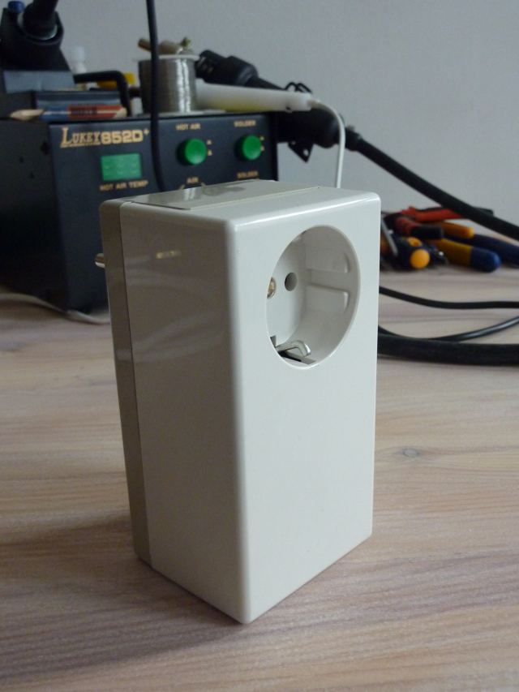
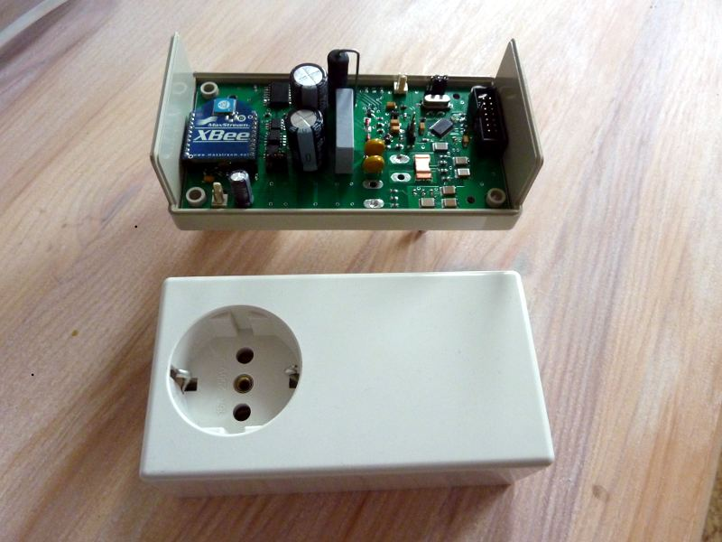
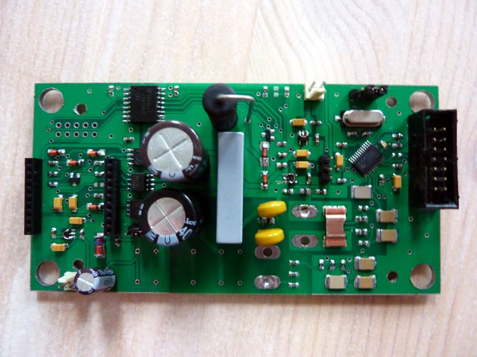

How to contribute on OpenEnergyMonitor dev + development plans
If your wondering how best to get involved with OpenEnergyMonitor development here are a couple of thoughts and possible pointers.
First a few insights and ideas from an another open source project we follow: DIYdrones. Thanks to Amin Zayani for the heads up on these: [1] [2] [3]
In Chris Anderson of DIY drones's words, who we think has articulated it well:
“The best way to participate is to do something cool on your own and share it here. All of our code bases and hardware design files are open. If you see an opportunity to improve something, just do it, post it and then tell the community about what you've done. If it's good, people will use it, help improve it, and we'll get a sense of what you can do. That makes it much easier for us to figure out what your skills are and where you'd fit in best.”
The following is an outline of our short term development plans and also longer term wish list of features that would be great to have. If you could help us with any of these items that would be very helpful.
Short term goals
For a general overview here are the short term goals that are being worked on at the moment and in the very near future:
- New casing design for emontx and emonbase
-
Transfer emonbase sketches over to EtherCard library -
Compatibility of main sketches with Arduino 1.0 -
Complete watchdog addition -
Complete and publish energy audit software v1.0 - Add wireless range indicator to emonGLCD based on jeelabs range example.
- Create pachube emonbase examples
Documentation
-
Write guide on building an end-to-end single CT emontx- emonglcd, emonbase setup. - Complete emontx solar hot water application documentation
For web application short and long term goals see emoncms development: feature plans and discussion thread
Longer term wish list
-
3 phase monitoringThere are sketches on GitHub for all the emonTx versions
-
Use NanodeRF onboard SRAM to buffer logging data in the event of internet connection.The Raspberry Pi can do this.
- Investigate BeagleBoard, Raspberry Pi emonBase with nice web-setup and configure. Discussion here: http://openenergymonitor.org/emon/node/488 and http://openenergymonitor.org/emon/emonbase/alternatives%20
- Plug based energy monitor - for per appliance monitoring - an alternative method to appliance inference.
-
Develop a series of control modules, that extend the emon system into an open source monitoring and control system that can be used for domestic and industrial situations. Control modules could include:
- multiple relay board (for dump load control, immersion heaters, pumps, lighting)
- solenoid valve driver board for central heating control.
- motor control
- triac controlled immersion heater dump load for dumping the exact right amount of power from excess pv generation. Two designs do this: See Choosing an Energy Diverter
- This emon monitoring and control system could link together by either a wireless bus say rfm12 or a wired bus (maybe rs485). The modules could be designed to fit in both DIN rail style casing or non-DIN rail casing.
- This could be a collaboration with other open source projects such as the All Power Labs GEK gasifier project who are interested in such a system.
-
Merge emonTx firmware examples into an Arduino library- Partly done with emonLib
- Appliance inference - infer from a single power feed of a house what each appliance uses and so providing a energy use by appliance breakdown. An initial start was made on this here: appliance inference 1.0
- PCB and casing for the 12 input pulse counter (a DIN rail and non din rail option)
- Larger monitoring PCB's: maybe 12 input CT?
- Explore using MQTT as an internet of things protocol
-
Using one power supply:
There is an ongoing discussion about whether its possible to power the monitoring circuit from the ac-ac adapter that makes the ac voltage reading, the discussion on this topic can be found here: Using one power supply ideasThe emonTx V3 series incorporates this principle.
Re: How to contribute on OpenEnergyMonitor dev + development plans
I would also add to the list :
- A way to supply the emonTX with current from the voltage sensor (tricky but possible)
A propos monitoring 3 phases I am working on it... expect some code after the holidays.
Re: How to contribute on OpenEnergyMonitor dev + development plans
and we should probably also start a developpers mailing list.
Re: How to contribute on OpenEnergyMonitor dev + development plans
Great to hear your working on 3 phase code Amin that will be a great help!
Supplying current from the AC-AC adaptor could be done if we can find a AC-AC adapter that has a centre tap and brings this centre tap out to the power jack. Does anyone know of such an adapter that brings out the centre tap?
Re: How to contribute on OpenEnergyMonitor dev + development plans
Im not sure if this will be beneficial? having to many different places to discuss and develop is hard to keep track of. I think we should focus development discussion here on the forums. Then it is all open and everyone can see whats going on.
Re: How to contribute on OpenEnergyMonitor dev + development plans
Trystan, I had written a rebuttal to your suggestion that a center-tapped AC supply could be used to both power the project and supply the AC sample, but I've come back and edited it after thinking this over for a bit.
I'm thinking that a full-wave rectified but unfiltered DC signal could be used as the reference voltage. This would eliminate the need for the 2.5 VDC bias on the sample voltage, and allow the center-tap of an AC supply to be connected directly to the project ground. There might be some sticky bits preventing the DC filtering downstream of the rectifier from smoothing out the needed AC component, but that might easily be prevented by using a series diode between the rectifier output/sample tap and the filtering network.
There would be some non-linearity in the full-wave diodes during the rectification, but it would take place at zero-crossing, where it's not very significant to the overall sample value. The value in the sketch would have to be computed on a multiplier of x2, as the total AC amplitude of the rectified sample would be half what a sine wave would be, but the full-wave representation of the sine wave would still be accurate and represent the mains voltage accurately.
The big problem I see with this is that using a full-wave rectified voltage smaple will knock the stuffing out of any phase calculations that the sketch performs. Perhaps the sktech could be modified to ignore or mirror outrageously "wrong" phase angles (as produced every half-cycle of the voltage sample)?
Otherwise, I don't see how a center-tapped AC supply can provide the isolation necessary to not upset the DC bias of the AC sample at the analog input.
Re: How to contribute on OpenEnergyMonitor dev + development plans
I also dont see how this could work without a second galvanic separation...
Re: How to contribute on OpenEnergyMonitor dev + development plans
I created a new topic for this subject:
Using one power supply - Ideas
Re: How to contribute on OpenEnergyMonitor dev + development plans
Hi!
Do you already have any ideas about construction of plug based energy monitor? I work on my own opensource energy measurement project. First I just released wall outlet plugable development version. Sorry, for now I havent any blog or site. Only photos.



It based on invasive measurement method with current sensing shunt and voltage divider. Plugmeter have isolated RS-232 interface for calibrating, isolated bus for numerous interfaces such as SPI, UART and others. Also nonisolated side powered from mains with low current capacitive power supply. Isolated side may be powered from AC/DC converter (not soldered on this board) or from external 12..5V DC power supply. And as you can see, it is not Arduino based..
If you are interested, I will glad to give my experience to your project.
WBR, Aleksander Senin
Re: How to contribute on OpenEnergyMonitor dev + development plans
Nice work! looks well built and cased. Whats your plans with it? and for pulishing/documenting it? Looks like you have invested a lot of time down the xbee route and im sure you have good reasons for this, but whats your thoughts on an arduino and rfm12 version?
Re: How to contribute on OpenEnergyMonitor dev + development plans
Thanks. My goal is creating open smartmetering platform for industrial and home using. It must be flexible and meets the open standards for data interchange. Inspired by your project I planning publish all documentation and sources. Several reasons why this is not done right now:
1. PCB of prototype tracerouted not in free EDA. I am trying work with KiCAD and gEDA, but for me now it is more head pain then work (or I just havent enought skills).
2. For quickstart I am using firmware sources from TI AppNote. It is open, but not absolutely free. And there is a big question - rewrite metering level from the ground or providing TI sources under license conditions.
In development version of device I am using XBee in experimental purpose. XBee have very usable footprint and formfactor. One of thoughts is using this footprint and pinout for custom communication modules. In addition Digi provide nice product ConnectPort X2. It is a some type of border router. ConnectPort works with iDigi cloud and may be custom programmed using Python scripts for transfering data in Google PowerMeter, Pachube or any other service include emoncms based. And also XBee lets quickly starts play with ZigBee SmartEnergy profile.
RFM12 is a good thing. But can it works in network, not only point-to-point? Or mesh network? For mobile plug based monitor it is may be important.
And of course I love Arduino. What about metering shield? I can redesign my device to this formfactor. Using Arduino for energy monitoring with CT is well but using it to measurement.. Voltage divider needs galvanic isolation for safety. An external measurement board such as metering shield can provide precision measurement with shunt and full isolation. Arduino will gets conditioned measurement results via uart and can spend more resources for communication.
Re: How to contribute on OpenEnergyMonitor dev + development plans
hey! interesting work.
i'm also working on something similar, are you familiar with the tweet a watt kit from adafruit industries?
Re: How to contribute on OpenEnergyMonitor dev + development plans
No, I din't know about Tweet-A-Watt before. It looks interesting.
And tell pair of words about your work. It based on Arduino or special metering chip?
Re: How to contribute on OpenEnergyMonitor dev + development plans
Thanks for the further information Alsenin. Here are my thoughts:
1) Although of course it would be better if the pcb and schematics could be created in open source EDA, we do and many other open source hardware projects are using Eagle, so if you use eagle dont worry too much about that.
2) I may well be wrong but I dont think it would be too hard to rewrite the metering level firmware and it would be better to have an open source solution, is it essentially the same maths as we use for voltage and current measurement giving real, apparent power, powerfactor, v rms and i rms? As in Emon.cpp and Emon.h here: https://github.com/openenergymonitor/emonTxFirmware/tree/master/emonTx_1CT_Voltage
Having the option to interchange communication option seems like a good idea. There could be a drop in board containing an atmega and a rfm12. But it might be nice to have an all-in-one pcb option?
The rfm12 can certainly be configured for multi node networking, it can have 28 nodes per network and 250 network groups, Glyn wrote some information about it here: http://openenergymonitor.org/emon/node/271 the rfm12's capabilities are the result of jean claud wipplers amazing work at jeelabs.net. One of the big advantages of it is its low cost, I have also had better experience with its range over xbee's in the past.
As for isolation, it is possible to isolate the arduino side from the high voltage side, I once built a circuit based on Cliff Jao and Xi Guo's work that used hcpl optoisolator amplifiers for this: openenergymonitor.org/emon/node/2 and if you use an RF solution for communication, the user is further isolated.
It would be great if you could build a plug based energy monitor that could interface and be used in parallel with the emontx, emonbase, emonglcd etc, I think that would complement the system nicely
Re: How to contribute on OpenEnergyMonitor dev + development plans
Good to hear Amin, let us know more about your plans!
Re: How to contribute on OpenEnergyMonitor dev + development plans
Trystan, thanks for links. I will learn it closely.
About working plugmeter together with emonXXX seems absolutely no problems. Just requires purchasing by me the RFM12 and do it. :) Yet another replaceable RF module.
Re: How to contribute on OpenEnergyMonitor dev + development plans
Modular design the MVC design allows extension to be added to implement new features / visualisations< boşanma avukatı Powerful visualisation - Using flot graphing emoncms allows viewing of large number of data avukat points (multiple years of power data) with fast loading times
Re: How to contribute on OpenEnergyMonitor dev + development plans
Amin, how did you make the case for your plug meter? I'm interested in working on a North American version in the near future.
Re: How to contribute on OpenEnergyMonitor dev + development plans
What's the status on the Plug based energy monitor? Alsenin, are you still working on this?
Re: How to contribute on OpenEnergyMonitor dev + development plans
Does anyone will develop emoncms RPI module, which will be using nRF2401 or nRF51822 instead of RFM12B, because RFM12B is end of life :/
Re: How to contribute on OpenEnergyMonitor dev + development plans
Hello,
IMO, an important aspect to take into consideration is that the nFR2401 is not IEEE802.15.4 compliant (internal buffer of only 32bytes) while, for example, the MRF24J40MA, based on a MRF24J40 (microchip), has a 128 bytes buffer and is fully IEEE802.15.4 compliant allowing to support 6LowPan, CoAp, ... all the protocols that have been designed for the Internet of Things.
There is few drawback on the choice of the MRF24J40MA dough: Limited range (distance sender-receiver) due to the low power permitted by the regulation and due to the high frequency (2.4GHz) (need a better antenna than the PCB antenna probably), and the price tag is higher (around 10 Euro for the radio).
Using IEEE802.15.4 will bring a lot of interoperability in the near future (each sensor could be access from anywhere, using standard tools...) I think this aspect should be strongly taken into consideration: Interoperability.
Note: The nRF51822 is a bluetooth low energy single chip solution (include a processor, RAM and Flash) that will require a specific firmware to be written for it... maybe not as DYI friendly than the current approach...
Best regards, Bernard.